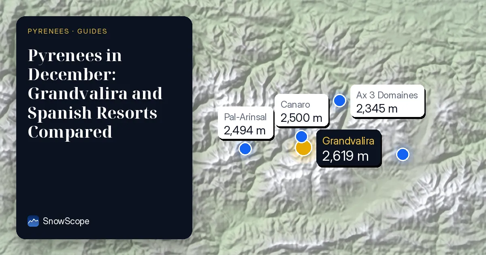

البرانس في دجنبر: مقارنة بين Grandvalira والمحطات الصبليونية
كتخطط لسفرة ديال السكي للبرانس في دجنبر 2026؟ شفنا الأرقام ديال Grandvalira، Baqueira Beret، Astún-Candanchú، Boí Taüll، و Cauterets باش نشوفو فين كاين أحسن تلج وأحسن أثمنة.
شوف توقعات التلج مباشرة ديال Grandvalira فالتطبيق ديال SnowScopeالعلو ديال التلج، التنبيهات والخريطة 3D، فابور.
المقارنة
البرانس فيها خليط ديال مناطق سكي كبيرة وصغيرة في Andorra، صبليون، وفرنسا. Grandvalira فيها 137 كم ديال البيستات و 53 ليف. من الجهة الصبليونية، Baqueira Beret فيها 154 كم ديال البيستات و 36 ليف. Astún-Candanchú فيها 35 كم ديال البيستات، Boí Taüll فيها 35 كم ديال البيستات، و Cauterets من الجهة الفرنسية فيها 25 كم ديال البيستات.
العلو ديال ليفات كيختلف على حسب المنطقة. Grandvalira كتمتد من 1674 م حتى لـ 2619 م، يعني واحد الفرق ديال 944 م. Baqueira Beret جاية بين 1504 م و 2600 م. Astún-Candanchú كتمتد من 1659 م حتى لـ 2272 م. Boí Taüll كبدا عالية في 2039 م وكتوصل لـ 2747 م. Cauterets كتمتد من 1725 م حتى لـ 2420 م.

التلج: شكون اللي رابح في دجنبر
تاريخ التلج ديالنا ديال 46 شتوات اللي فاتو كيبين بلي في بداية دجنبر التلج كيكون قليل لتحت في كاع هاد المحطات. في Grandvalira، القاعدة جات في 1674 م والعلو ديال التلج العادي في دجنبر هو 9 سم، وفي 15 دجنبر كيكون 8 سم. Baqueira Beret عندها قاعدة في 1504 م والعلو ديال التلج العادي في دجنبر هو 8 سم و 9 سم في 15 دجنبر. Astún-Candanchú عندها علو ديال التلج عادي ديال 18 سم في القاعدة ديالها اللي في 1659 م، وكيهبط لـ 13 سم في 15 دجنبر. Boí Taüll عندها قاعدة في 2039 م والعلو ديال التلج العادي في دجنبر هو 16 سم و 17 سم في 15 دجنبر. Cauterets عندها قاعدة في 1725 م والعلو ديال التلج العادي في دجنبر هو 23 سم و 21 سم في 15 دجنبر.
كلما طلعنا، الأرقام كتزيان. في وسط الجبل، العلو ديال التلج العادي في دجنبر في Grandvalira هو 27 سم، في Baqueira Beret هو 20 سم، في Astún-Candanchú هو 28 سم، في Boí Taüll هو 25 سم، وفي Cauterets هو 33 سم. في الفوق ديال ليفات، Grandvalira كتوصل لـ 45 سم، Baqueira Beret لـ 30 سم، Astún-Candanchú لـ 38 سم، Boí Taüll لـ 34 سم، و Cauterets لـ 42 سم. إلا شفنا كيفاش تبدل العلو ديال التلج في وسط الجبل بين أول 15 شتوات اللي فاتو وآخر 15 شتوات اللي فاتو، Grandvalira تحولات من 21 سم لـ 25 سم، Baqueira Beret من 17 سم لـ 20 سم، Astún-Candanchú من 29 سم لـ 23 سم، Boí Taüll من 22 سم لـ 20 سم، و Cauterets من 35 سم لـ 23 سم.
الثمن: شكون اللي رابح
الأثمنة اللي شفناها في السيتات الرسمية كتبين فرق واضح في ثمن التيكي ديال النهار للموسم 2026-27. Grandvalira كدير 62.50 EUR للتيكي ديال نهار واحد للكبار إلا شريتيه أونلاين ليوم الاثنين 14 دجنبر 2026، و 72.00 EUR في الكيس. Baqueira Beret دايرة تيكي ديال نهار واحد للكبار بـ 74,00 €، وتيكي ديال 6 أيام بـ 359,00 €، وتيكي ديال نهار واحد بالكارط Baqueira Pass اللي كتعمر بـ 70,00 €.
Astún-Candanchú كدير 54.50 EUR للتيكي المشترك ديال نهار واحد للكبار إلا شريتيه أونلاين و 59.50 EUR في الكيس، والتيكي المشترك ديال 5 أيام بـ 237.00 EUR. Boí Taüll دايرة تيكي ديال نهار واحد للكبار بـ 49.00 EUR. Cauterets كدير 46 EUR للتيكي ديال نهار واحد للكبار بالثمن العمومي و 276 EUR للتيكي ديال 6 أيام.
قاعدة لخر ديال دجنبر
النسبة ديال الشتوات اللي كان فيها 30 سم أو أكثر في وسط الجبل كتبين علاش الوقت مهم. في Grandvalira، هاد النسبة كطلع من 30 في المائة في السيمانة الأولى ديال دجنبر حتى لـ 65 في المائة بين 22 و 28 دجنبر. في Baqueira Beret، كتمشي من 22 في المائة لـ 41 في المائة. في Astún-Candanchú، كتمشي من 35 في المائة لـ 63 في المائة. في Boí Taüll، كطلع من 35 في المائة لـ 54 في المائة. في Cauterets، كتمشي من 43 في المائة لـ 67 في المائة. إلا تسنيتي السيمانات اللخرين، كتكون عندك فرصة كبر باش تلقى التلج مغطي كلشي.
الحكم على حسب نوع السفرة
إلا كنتي باغي منطقة كبيرة وأكثر تلج عادي فدجنبر فالفوق فهاد المجموعة، 45 سم، Grandvalira هي أحسن خيار، خصوصا إلا قطعتي التيكي ديالك أونلاين قبل. إلا كنتي باغي ميزانية قليلة في الجهة الصبليونية، Boí Taüll كتعطي تيكي ديال نهار واحد بـ 49.00 EUR مع قاعدة عالية في 2039 م. بالنسبة للناس اللي كيشوفو Cauterets في فرنسا، التيكي ديال نهار واحد بـ 46 EUR كتمشي مع علو ديال التلج عادي في الفوق ديال 42 سم في دجنبر.
نصايح للي كيتزلجو
- قطع التيكي ديال Grandvalira أونلاين قبل ما توصل باش تخلص 62.50 EUR بلاصة 72.00 EUR ديال الكيس.
- عزل السيمانة ديال 22-28 دجنبر باش تلقى أكبر نسبة ديال الشتوات اللي كان فيها 30 سم أو أكثر ديال التلج في وسط الجبل في كاع المحطات.
- شوف النشرة ديال الانهيارات قبل ما تخرج على البيست في أي وحدة من هاد المناطق.
- عزل المحطات اللي القاعدة ديالهم عالية بحال Boí Taüll في 2039 م إلا كنتي غاتسافر في السيمانات الأولى ديال دجنبر فاش كيكون التلج قليل.
- استعمل السيتات الرسمية ديال المحطات باش تأكد من تواريخ الخدمة بالضبط وعدد ليفات اللي خدامين في دجنبر 2026.
خرائط أخرى (مواقع خارجية)
المراجع والمصادر
- Grandvalira, official ski pass booking (online price for 14 December 2026, read 2026-11-13) www.grandvalira.com/en/ski-pass/day
- Baqueira Beret, official prices (tarifas), season 26-27 www.baqueira.es/es/tarifas
- Astún, official lift pass prices (tarifas 26-27) astun.com/forfaits/
- Boí Taüll, official lift pass prices (tarifes) pirineu365.cat/boitaull/estacio/tarifes/
- N'PY, Cauterets official ski pass prices 2026-27 www.n-py.com/fr/cauterets/forfaits-ski
- SnowScope, December snow at three heights and today's snow map snowscope.app/
على هاد الأرقام
الأرقام ديال التلج: التاريخ ديال التلج ديال SnowScope، 46 شتوة اللي فاتت (1980-81 حتى ل 2025-26) فتلاتة ديال العلوات فكل محطة (موديل ديال اللي فات مصحح بالعلو: تقدير لمنطقة، ماشي قياسات ديال المحطة)؛ أرقام دجنبر محسوبة من العلو اليومي ديال التلج فهاد الشتوات. التلج دابا والتوقعات ديال جوج سيمانات: توقعات SnowScope (من ECMWF و GFS، مجال ماشي وعد). التيليسييجات والبيستات: الخريطة ديال OpenSkiMap. الأثمنة: الصفحات الرسمية اللي لتحت، متشافة نهار 2026-11-13؛ الأثمنة تقدر تتبدل، شوف قبل ما تحجز.
كيفاش تستاشهد بهاد المقال
للبحث، التعليم ولا الصحافة: الأرقام والرسومات تقدر تعاود تخدم بيهم بحرية تحت CC BY 4.0 مع هاد الاستشهاد.
SnowScope (2026), البرانس في دجنبر: مقارنة بين Grandvalira والمحطات الصبليونية, https://snowscope.app/blog/ar/2026/11/andorra-vs-spanish-pyrenees-december-ski-2026.html, تشاف ف 2026-11-14
SnowScope (Atlas Labs). (2026, November 14). البرانس في دجنبر: مقارنة بين Grandvalira والمحطات الصبليونية. SnowScope snow reports. https://snowscope.app/blog/ar/2026/11/andorra-vs-spanish-pyrenees-december-ski-2026.html
BibTeX
@misc{snowscope2026andorravsspanishpyrenees,
author = {{SnowScope (Atlas Labs)}},
title = {البرانس في دجنبر: مقارنة بين Grandvalira والمحطات الصبليونية},
year = {2026},
month = nov,
howpublished = {\url{https://snowscope.app/blog/ar/2026/11/andorra-vs-spanish-pyrenees-december-ski-2026.html}},
note = {Published 2026-11-14 15:21 UTC; accessed 2026-11-14}
}· CC BY 4.0 · الطريقة، الداتا والأدوات →
Grandvalira: التلج والحرارة حسب العلو، هاد الشتا مقارنة مع اللي فاتت (الأدوات) →
تابع Grandvalira
فابور: ميساج ملي يجي التلج، والتوقعات كل صباح.
تقارير أخرى ديال التلج

Boí Taüll كيبدا من 2039 م وكيغلب Baqueira Beret فالتمن ديال البيست، واخا التلج ديال بدايات دجنبر كيطلب شوية ديال الصبر.

Baqueira-Beret كاينة ف Val d'Aran، فالجهة الأطلسية ديال البرانس. شنو كيعني هادشي للتلج ديالها، مجرب ب 46 شتوة اللي فاتو مقارنة مع La Molina، وإمتى تمشي.